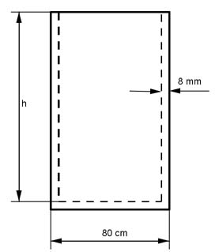

Aufgabe 157 Wie hoch muss ein Wasserbehälter mit quadratischem Boden innen sein, wenn er 3,6 m³ fassen soll, Außenkanten von 80 cm hat und aus 8 mm dickem Blech besteht?  3,6 m³ = 3 600 dm³ 80 cm = 8 dm 8 mm = 0,08 dm V = (8 dm - 2 * 0,08 dm)² * h 3 600 = 61,4656 * h | :61,4656 h = 58,57 dm = 5,86 ml